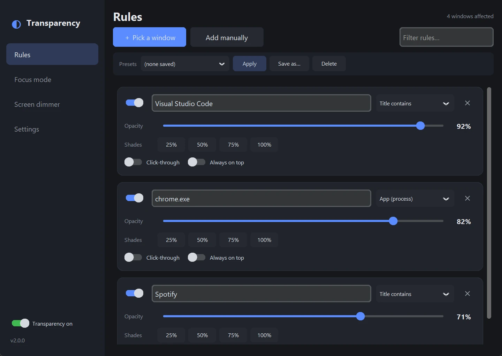

selected utility · live demoU—01View source
Email Briefing
A calmer way to meet the inbox: the messages that matter, distilled into one useful briefing.
Open-source exhibition · selected work, 2023—2026
Run your cursor through the sentence.
So I make software move. Books breathe. Companions wander. Keys bend light. Useful tools stay practical and still have a point of view.
Click, swipe, or use ← →
resident curatorPsst—this museum purrs back.
specimen 00 · museum kitten
01 · recent habitat / 2026
A local-first storybook notebook that lives on a bookshelf. Everything stays on your machine.
02 · companion study / 2026
An AI character that steps outside the chat box and shares your screen-space.
“Software can have body language.”
Click to call
03 · playable light / recent work
A Rust/Tauri per-key RGB engine for ASUS ROG laptops, with 50 hand-built effects.
Try the keys
04 · selected 2023 experiments / the good shelf, not the attic
A few older experiments still here because people found them—and because they explain where the instincts began.
curator’s noteResonance, not a résumé dump.
Characters with presence
Context, voice, and memory turned non-player characters into someone you could actually meet.
View source05 · useful objects / selected tools
Not every idea needs a personality. Some should simply remove friction beautifully.
All public repositories
selected utility · live demoA calmer way to meet the inbox: the messages that matter, distilled into one useful briefing.